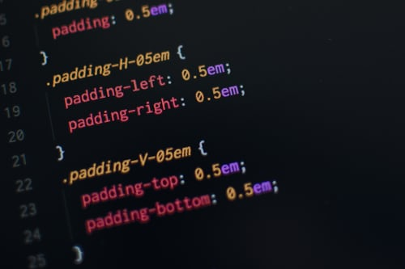

c"CSS" redirects here. For other uses, see CSS (disambiguation). "Pseudo-element" redirects here. For pseudoelement symbols in chemistry, see Skeletal formula § Pseudoelement symbols. For the use of CSS on Wikipedia, see Help:Cascading Style Sheets. Cascading Style Sheets (CSS) CSS3 logo and wordmark.svg Filename extension .css Internet media type text/css Uniform Type Identifier (UTI) public.css Developed by Håkon Wium LieBert BosWorld Wide Web Consortium Initial release December 17, 1996; 23 years ago Type of format Style sheet language Standards Level 1 (Recommendation) Level 2 (ditto) Level 2 Revision 1 (ditto) Website www.w3.org/Style/CSS/ Cascading Style Sheets Style sheetCSS Zen GardenThe Zen of CSS Design Concepts box modelimage replacementflexboxgrid Philosophies TablelessResponsive"Holy grail" Tools SassLessStylusCSSTidy Comparisons CSS supportStylesheet languages Wikibooks page Cascading Style Sheets vte HTML Dynamic HTMLHTML5 audiocanvasvideoXHTML BasicMobile ProfileC-HTMLHTML element span and divHTML attributeHTML frameHTML editorCharacter encodings UnicodeLanguage codeDocument Object ModelBrowser Object ModelStyle sheets CSSFont familyWeb colorsHTML scriptingJavaScript WebGLWebCLW3C ValidatorWHATWGQuirks modeWeb storageRendering engine Comparisons Document markup languagesHTML supportXHTML 1.1 Cascading Style Sheets (CSS) is a style sheet language used for describing the presentation of a document written in a markup language like HTML.[1] CSS is a cornerstone technology of the World Wide Web, alongside HTML and JavaScript.[2] CSS is designed to enable the separation of presentation and content, including layout, colors, and fonts.[3] This separation can improve content accessibility, provide more flexibility and control in the specification of presentation characteristics, enable multiple web pages to share formatting by specifying the relevant CSS in a separate .css file, and reduce complexity and repetition in the structural content. Separation of formatting and content also makes it feasible to present the same markup page in different styles for different rendering methods, such as on-screen, in print, by voice (via speech-based browser or screen reader), and on Braille-based tactile devices. CSS also has rules for alternate formatting if the content is accessed on a mobile device.[4] The name cascading comes from the specified priority scheme to determine which style rule applies if more than one rule matches a particular element. This cascading priority scheme is predictable. The CSS specifications are maintained by the World Wide Web Consortium (W3C). Internet media type (MIME type) text/css is registered for use with CSS by RFC 2318 (March 1998). The W3C operates a free CSS validation service for CSS documents.[5] In addition to HTML, other markup languages support the use of CSS including XHTML, plain XML, SVG, and XUL.
